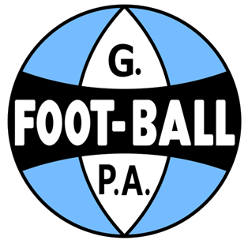
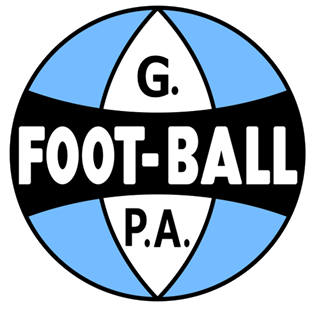
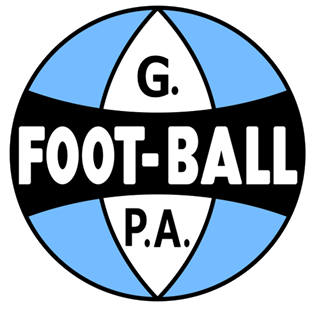
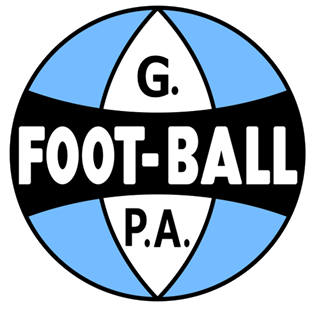

.webp) 



O Grêmio Foot-Ball Porto Alegrense nasceu de uma bola de futebol, como deveria acontecer com um clube predestinado às maiores glórias. A trajetória vitoriosa começou com o paulista Cândido Dias da Silva, trabalhando há algum tempo em Porto Alegre e sua bola de futebol. Nessa época apareceu na capital gaúcha a equipe de futebol do Sport Clube Rio Grande. Os ingleses e alemães que jogavam nos times de Rio Grande haviam sido convidados para uma exibição na cidade. No dia marcado, 7 de setembro de 1903, o campo da várzea ficou rodeado de curiosos. Cândido, com sua bola de baixo do braço, estava entre eles com a atenção redobrada. Em dado momento, a bola dos ingleses esvaziou-se, para desapontamento geral. Cândido, mais do que depressa, emprestou a sua, garantindo o final da demonstração. Em troca, ao final da partida, obteve dos jogadores as primeiras lições sobre futebol e, principalmente, deles ficou sabendo como agir para fundar um clube. Foi então, em 15 de setembro de 1903, que trinta e dois rapazes se reuniram no Salão Grau, restaurante de um hotel da Rua 15 de Novembro, atual rua José Montaury, localizado onde estão agora os fundos da Galeria Chaves e deram início à história de um clube vencedor, disposto a superar todos os desafios. Carlos Luiz Böhrer foi eleito o primeiro Presidente, sem jamais imaginar a projeção mundial que o recém-nascido clube um dia alcançaria.